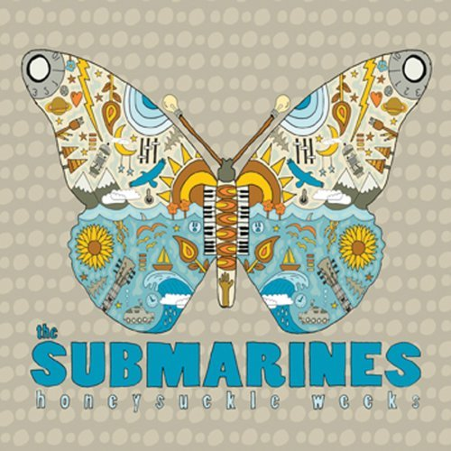

|
The members of The Submarines survived a failed relationship to reunite as both a band an a married couple. This instantly catchy tune comes from the second album by the LA-based band. John Dragonetti (great name) and Blake Hazard take turns on vocals throughout the album. The inclusion of one of their songs on the "Nick and Nora's Infinite Playlist" soundrack adds to their buzz factor. |
 |